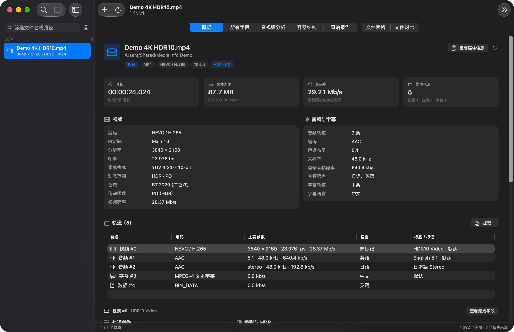
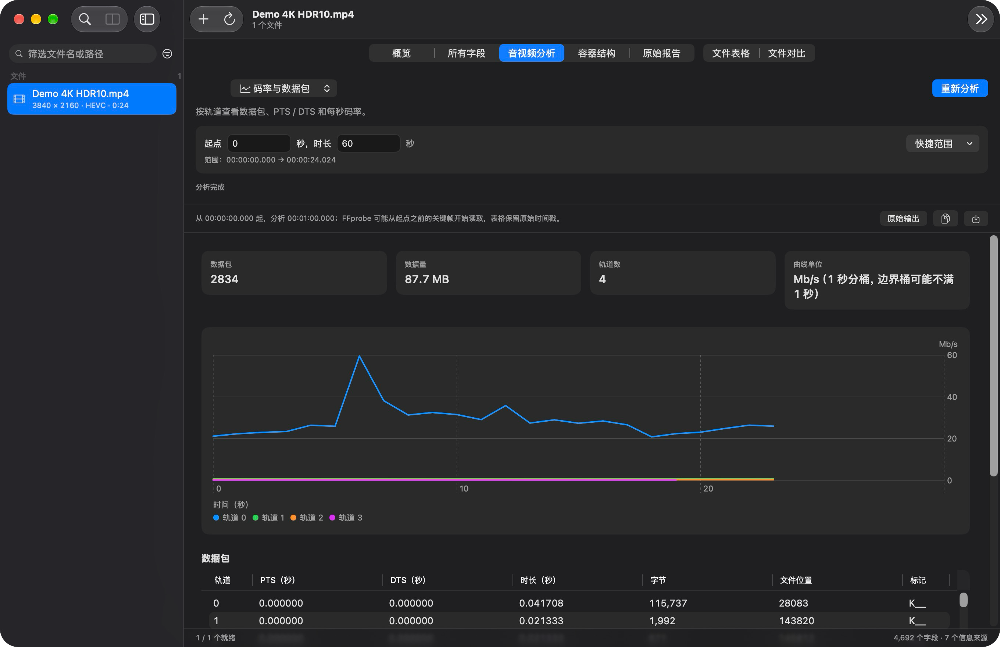

01 / INSPECT
读懂文件。
轨道、色彩、HDR 与 Dolby Vision 参数。

01 / 功能
全部内置，无需安装 Homebrew。
轨道、色彩、HDR 与 Dolby Vision 参数。
码率曲线、帧类型、GOP 与响度。
多种报告格式，单轨道提取。
02 / 分析与对比
所有字段可搜索、可复制。

被系统拦下时，到「系统设置 → 隐私与安全性」点「仍要打开」。App 未经苹果公证，请只从 GitHub 下载。
不用，14 个工具全部内置，也可以在设置里改用自己的版本。
不会。App 没有网络权限，所有分析都在本机完成。
内置的工具和它们的运行库占了大部分空间。
没有。本应用独立开发，只是内置了它的命令行版本。